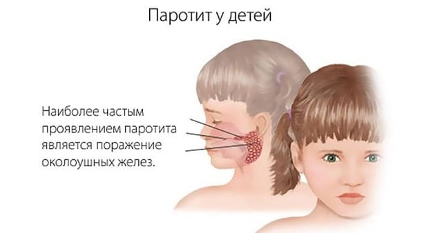
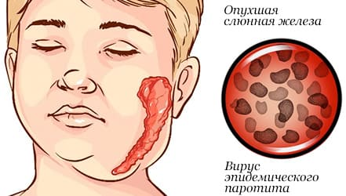

Сложное медицинское имя болезни – эпидемический паротит – в быту почти не применяется. Большинство родителей и множество врачей традиционно используют другое название – свинка. Больные дети, и особенно переболевшие, это слово не очень любят: легко себе представить ехидные шуточки одноклассников, получивших информацию о том, что у Пети была свинка…
Восприимчивость к «свинскому» вирусу заметно ниже, чем таковая при кори и ветрянке, но довольно велика – около 50 %. Размножается вирус в железистой ткани и поражает, таким образом, почти все железы организма – половые, слюнные, поджелудочную, щитовидную. Изменения в работе большинства желез редко достигают того уровня, при котором начинают возникать конкретные жалобы и симптомы, но слюнные железы поражаются в первую очередь и сильнее всего, причем не только околоушные, но и подчелюстные.

Началу заболевания редко предшествуют какие-либо жалобы. Первыми признаками болезни почти всегда являются боли и припухлость в области околоушной слюной железы, которые нарастают в течение не более трех дней. Далее и боли, и припухлость начинают уменьшаться. В результате за период от трех до семи дней наступает выздоровление.

Что желательно знать:
• у 30–40 % заразившихся вирусом никаких признаков болезни не возникает (бессимптомные формы). Поэтому избежать свинки прячась от больных – не всегда удается. Единственно приемлемый путь профилактики – прививки;
• эпидемический паротит практически не нуждается в лечении, а при сильных болях и высокой температуре необходимости в приеме лекарств более сильных, чем ибупрофен или парацетамол, как правило, не возникает. Реальная помощь родителей может проявиться лишь в том, что ребенку будет предлагаться пища, которую легко жевать (при свинке жевать больно);
• болезнь наиболее опасна у мальчиков в периоде полового созревания (поражение яичек); но в любом случае, даже если родители не сомневаются в диагнозе, даже если не нужна справка в школу или детский сад, даже если ребенок неплохо себя чувствует – в обязательном порядке необходимо наблюдение врача, поскольку проявления болезни могут быть весьма серьезными, вплоть до панкреатита, нефрита, менингоэнцефалита, артритов и глухоты из-за поражения слухового нерва (к счастью, все это бывает редко);
• больной свинкой заразен за 1–2 дня до появления первых признаков болезни и в течение 9 дней после ее начала (максимальное выделение вируса – с третьего по пятый день).
Е.О.Комаровский. "Здоровье ребенка"